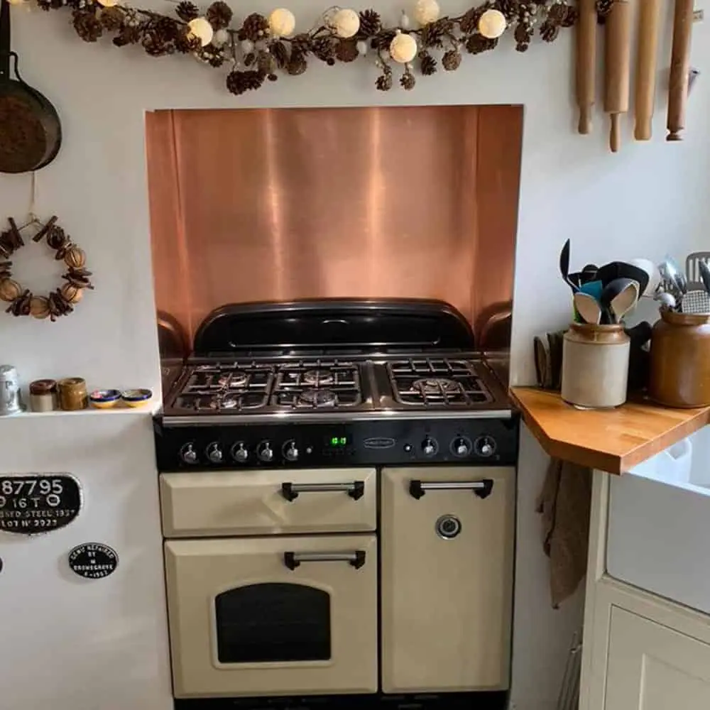

One of the hottest trends for kitchens in 2022 is set to be the lived-in vintage look. Since 2020, people are working from home and spending longer there, and kitchens are becoming more than just a place to prepare meals. In many homes, the kitchen has become a true hub: a space for Zoom calls, homework, even lessons. All this means a move away from spotlessly sleek and clinical designs, and an embracing of a more bohemian, lived-in look. Inspired by bustling farmhouse kitchens, this is an easy-going aesthetic, filled with texture and vibrancy. The good news is that by mixing vintage pieces with existing units, it’s easy to achieve the look without going for a full refit. The even better news? We’ve compiled some ideas to inspire. Get ready for a riot of kitchen colour…
- A Dresser Display
Lived-in vintage kitchens aren’t afraid to clash. Here, the floor tiles complement the splashback , whilst a contrasting, bold-print fabric is used to screen-off storage. This busy space uses a classic Welsh dresser and traditional wall-mounted paint rack to achieve a cottage feel. Items such as jars of pasta, a traditional moka pot and vintage teacups are placed on display, not hidden away. There’s even a fishbowl on the worktop in this busy but homely space.
2. Colourful Touches
This cute corner proves that you don’t need swathes of space to create a stylish kitchen. Thoughtful touches have been added to create vibrancy and interest. We love the ceramic door knobs, the aged copper Buddha head and the vintage brass platter on display. A mish-mash of vivid colours adds more than a dash of character and warmth.
4. Houseplant Heaven
That the world is obsessed with houseplants is no secret, but they’re often grown in bedrooms and living rooms. Here, they drip from the ceiling and sit atop the microwave, giving a real ‘outdoors in’ feel. This kitchen is also home to a leather sofa, draped in a knitted throw. A retro fridge, patterned dining table and vintage stool (with optional cat) complete the cosy look.
5. Bare Bricks
There’s a LOT of lived-in vintage going on here. Plenty of plants, plus exposed brick for maximum texture. Hanging shelves showcase décor like kitsch paintings and the brass giraffes, as well as practical kitchen items, such as the knife block. We love the turquoise units, the vintage metal and wood trolley as kitchen island, wicker baskets for fruit and that faded Asian rug.
6. Mismatched Chairs
A relatively simple way to achieve the lived-in vintage look is with mismatched dining chairs. Odd chairs can often be picked up for cheap from charity shops and on eBay, and it’s easy to paint them with chalk paint. It’s a great way to give your kitchen a makeover without making permanent changes.
7. Free and Easy
The various, freestanding units in this bright kitchen create a characterful space. At the table, salvaged church chairs are mixed with practical storage benches. Mesh-fronted cabinetry in a kaleidoscope of distressed colour gives this room a country cottage feel. This kitchen also stars two classic vintage fittings: a dazzling-white Belfast sink with vintage brass mixer tap.
8. Aged Copper Splashback
This kitchen already has some impressive farmhouse credentials: a ceiling clothes hanger, a lush, blue Aga, that distressed tabletop. The addition of the aged copper splashback , in the Ayrshire finish , is the crowning glory. This expertly-aged copper features subtle flecks of blue-green verdigris, and is lacquered to lock in the look for many years to come.
9. Natural Copper Splashback

Here’s another copper splashback installed in a beautiful kitchen. The natural copper finish gleams and makes the splashback a real focal point of the room, whilst the wraparound design keeps things practical. Copper splashbacks are easy to install, easy to clean and tie in brilliantly with traditional touches, like the hanging rolling pins and rustic garland shown here.
10. Colour is Key
Why have one pop of colour when you can have many? This loud kitchen features coral-orange cabinetry, a bright mandala rug and a mixture of tiles on the floor and the walls. Note the painted antique-style dresser in contrasting green and pink, the wicker lampshade and the yellow kettle. Details like these draw the eye away from the relatively-boring white goods.
11. Wonderful Wallpaper
Who says kitchen walls have to be painted or tiled? Here, an opulent, green wallpaper delivers richness and warmth. This colour palette would be beautifully complemented by an aged brass splashback . Stacks of books, plenty of pictures and soft cushions and throws make this space ready to be lived in and loved.


If you can dream it, we’ll make it.
Bars, balustrades, staircases, worktops, cladding and pieces that don’t have a name yet. Our designers and craftspeople work in brass, copper, zinc and steel, and alongside wood.